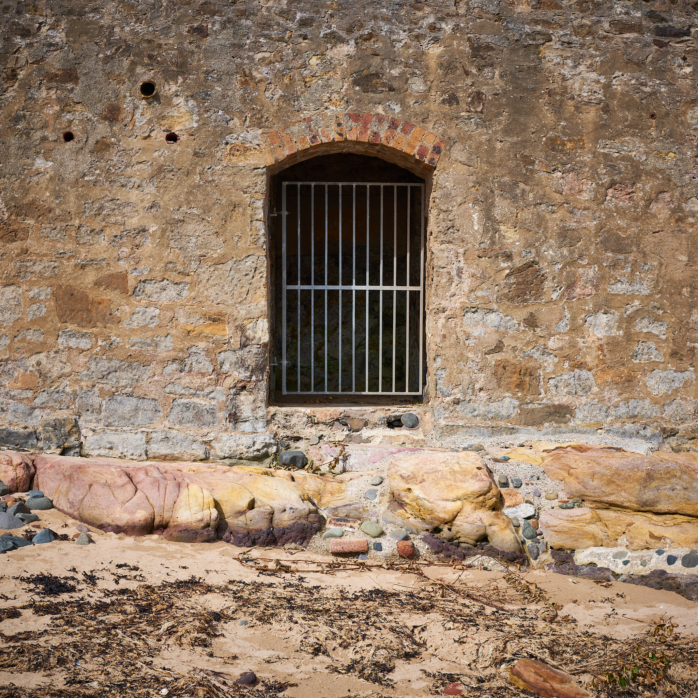
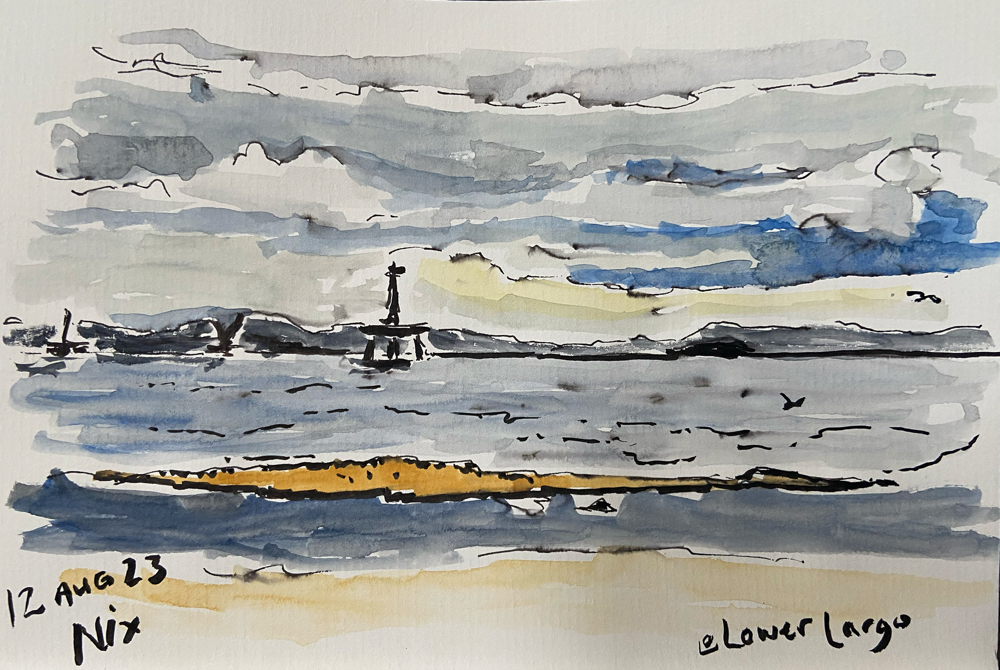
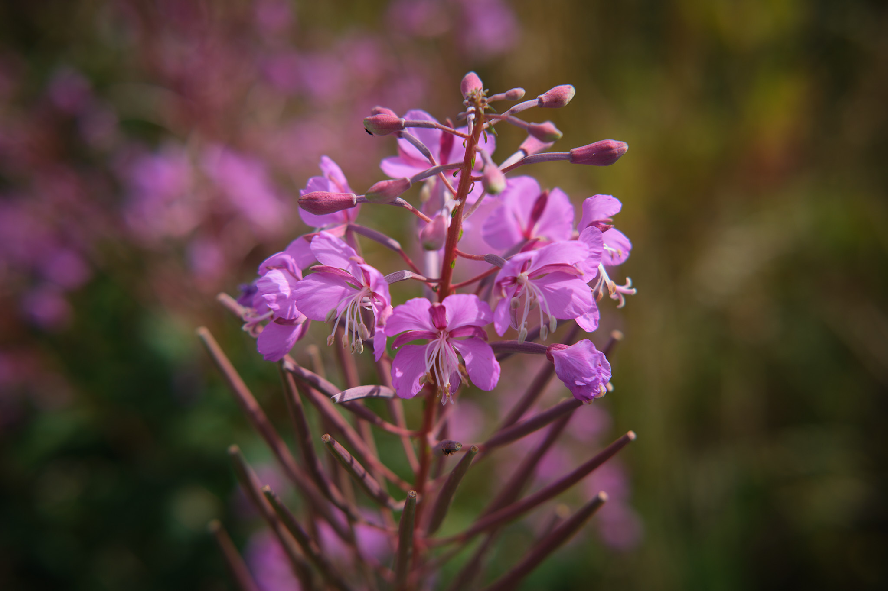
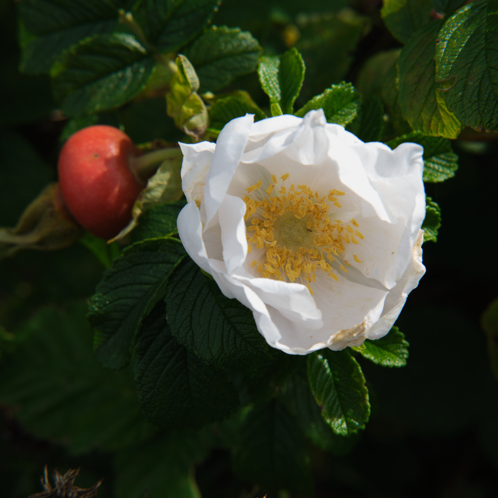

Lower Largo
The summer is going down fighting, with thunder, rain, heat and humidity to set the mood. Injuries and the conflict between living and working raging, both raising anxiety levels. We deceided we needed an escape for a couple of hours and so bolted to a safe space, the same beach we were on in the last post, but approached from the other direction this time. We parked in the Temple car park at Lower Largo.

The walk northward along the beach from the car park is a delight for shed people like us. The houses along the front have little gardens, usually with some kind of shelter or writer’s retreat on the side facing the Forth. Some are painted to match the house. The gate above guards a flight of stone steps up to one of the gardens.
I took one camera, my Fuji X-T5 with the superb XF35mm f/2 lens and my sketching kit. I would say that I am a person of many interests and hobbies, and no time to pursue any of them properly. As far as sketching is concerned, I know, from friends and every piece of advice I’ve read, that always having your sketching kit with you is essential to the development of skills.

What has dawned on me lately is that it is not enough to have the stuff with you, you actually have to get it out and use it. So, taking the opportunity to rest a while, I sketched the scene before me, looking across the Forth towards the capital, using a Waterman fountain pen. It looked unfinished, so I added some water colour. Not sure I got the colours right, and the lighter blue was definitely a stroke too far. The fountain pen ink isn’t waterproof, it seems. Note to self: sketch in pencil.
I’m not sure about the finished sketch, it looks too contrasty to me, with the additional brush fineliner outlines added along the far shore. Mustn’t be discouraged, though, I am deliberately trying to develop the ability to sketch at speed and en plein air. Those arty friends of mine encourage me to keep going and I am thankful for their advice. It can only improve, right?

The walk back along the path above the beach is a delight for its richness of wild flowers and birdsong. The yellowhammers, robins and crows were close by as we walked back towards the car, singing of the joy and privileges we enjoy living here.
